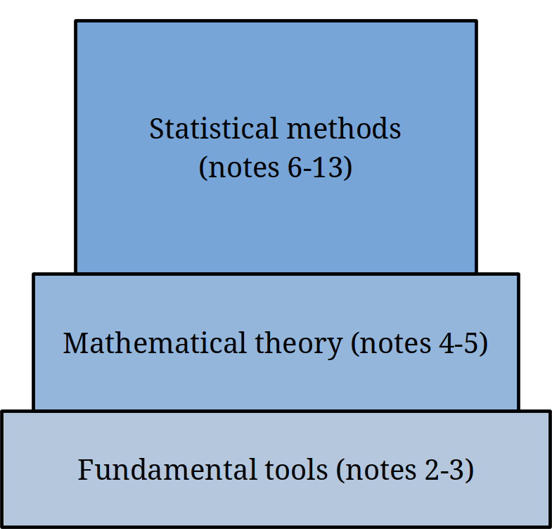

Chapter 1 Introduction To Statistics
1.1 Statistics
Statistics is the science of converting data into knowledge.
What exactly is data?
- A set of values corresponding to objects.
- Genetic sequence of a person
- Stock prices over time
- Literacy rates of different groups
- A person’s search history
- …
Data can be dense and un-interpretable. The R dataset contains design aspects for several automobiles.
## mpg cyl disp hp drat wt qsec vs am gear carb
## Mazda RX4 21.0 6 160.0 110 3.90 2.620 16.46 0 1 4 4
## Mazda RX4 Wag 21.0 6 160.0 110 3.90 2.875 17.02 0 1 4 4
## Datsun 710 22.8 4 108.0 93 3.85 2.320 18.61 1 1 4 1
## Hornet 4 Drive 21.4 6 258.0 110 3.08 3.215 19.44 1 0 3 1
## Hornet Sportabout 18.7 8 360.0 175 3.15 3.440 17.02 0 0 3 2
## Valiant 18.1 6 225.0 105 2.76 3.460 20.22 1 0 3 1
## Duster 360 14.3 8 360.0 245 3.21 3.570 15.84 0 0 3 4
## Merc 240D 24.4 4 146.7 62 3.69 3.190 20.00 1 0 4 2
## Merc 230 22.8 4 140.8 95 3.92 3.150 22.90 1 0 4 2
## Merc 280 19.2 6 167.6 123 3.92 3.440 18.30 1 0 4 4
## Merc 280C 17.8 6 167.6 123 3.92 3.440 18.90 1 0 4 4
## Merc 450SE 16.4 8 275.8 180 3.07 4.070 17.40 0 0 3 3
## Merc 450SL 17.3 8 275.8 180 3.07 3.730 17.60 0 0 3 3
## Merc 450SLC 15.2 8 275.8 180 3.07 3.780 18.00 0 0 3 3
## Cadillac Fleetwood 10.4 8 472.0 205 2.93 5.250 17.98 0 0 3 4
## Lincoln Continental 10.4 8 460.0 215 3.00 5.424 17.82 0 0 3 4
## Chrysler Imperial 14.7 8 440.0 230 3.23 5.345 17.42 0 0 3 4
## Fiat 128 32.4 4 78.7 66 4.08 2.200 19.47 1 1 4 1
## Honda Civic 30.4 4 75.7 52 4.93 1.615 18.52 1 1 4 2
## Toyota Corolla 33.9 4 71.1 65 4.22 1.835 19.90 1 1 4 1
## Toyota Corona 21.5 4 120.1 97 3.70 2.465 20.01 1 0 3 1
## Dodge Challenger 15.5 8 318.0 150 2.76 3.520 16.87 0 0 3 2
## AMC Javelin 15.2 8 304.0 150 3.15 3.435 17.30 0 0 3 2
## Camaro Z28 13.3 8 350.0 245 3.73 3.840 15.41 0 0 3 4
## Pontiac Firebird 19.2 8 400.0 175 3.08 3.845 17.05 0 0 3 2
## Fiat X1-9 27.3 4 79.0 66 4.08 1.935 18.90 1 1 4 1
## Porsche 914-2 26.0 4 120.3 91 4.43 2.140 16.70 0 1 5 2
## Lotus Europa 30.4 4 95.1 113 3.77 1.513 16.90 1 1 5 2
## Ford Pantera L 15.8 8 351.0 264 4.22 3.170 14.50 0 1 5 4
## Ferrari Dino 19.7 6 145.0 175 3.62 2.770 15.50 0 1 5 6
## Maserati Bora 15.0 8 301.0 335 3.54 3.570 14.60 0 1 5 8
## Volvo 142E 21.4 4 121.0 109 4.11 2.780 18.60 1 1 4 2We might want to know something about this data - for example, how does the weight of a car relate to its miles per gallon? We can’t tell just by reading this chunk of raw data with human eyes. Statistical methods distill the data into useful, interpretable figures.
Why study statistics? In addition to being a powerful tool for understanding patterns, statistics is ubiquitous in academic research and other contexts. This is a double-edged sword…
1.2 Key terms
We begin by asking a question about a population of interest. A population is made up of all individuals.
- For example, all US males, all microbes in a dish, all bolts from a factory.
Populations are almost always too large to study entirely. If we could measure every object in a population, we would have no need for statistics!
In practice, to answer our question of interest, we need to take a sample from the population. These are the units that are actually observed.
- The sample should be representative of the population.
- For example, pick 100 US males at random.
By definition, sampling introduces uncertainty, because we are only looking at a small portion of the population. Statistical methods use probability (the mathematics of randomness) to deal with this uncertainty in a principled way.

How can we make sure the sample is representative?
One strategy is a simple random sample (SRS). In an SRS, every group of size \(n\) (sample size) from the population is equally likely to be drawn.
Taking a SRS means we are choosing items completely at random.
2000 patients (1350 with high cholesterol, 650 without) agreed to participate in a cholesterol drug trial. How can we take a SRS?
- The last 200 patients to sign up are chosen.
- A computer produces 200 random values between 1 and 2000, and those patients are chosen.
- A computer produces 200 random values between 1 and 1350, and those patients with high cholesterol are chosen.
- A proportional number of patients with high cholesterol and normal cholesterol are chosen.
The second scenario is a SRS.
Now let’s go back to the question of interest. We often want to know about a specific numeric value. For example, the average height of all US males.
A parameter is a numeric summary of the population.
Remember, we can’t study the entire population. So we don’t know what the value of the parameter is! However, we can measure this value for our observed sample. It is complete feasible to measure the height of 100 US males.
A statistic is the corresponding numeric summary of the sample.
We calculate a statistic and use it to learn about the parameter via estimation.
Parameter describes the Population, Statistic describes the Sample.
The way the sample was collected will influence the scope of our conclusions. Suppose medical researchers were trying to study the effect of a certain drug. What’s the best way to do this? Who should they assign to take the drug?
There are two broad categories of studies that produce data.
In an experimental study, researchers assign individuals in the experiment to groups in a way that makes the experimental conclusions valid.
Medical researchers studying a drug could assign one group of individuals to take a drug treatment, and another group to take a control. They choose who goes into each group. In general, for an experimental study, the researcher actively manipulates certain variables, then records the values of the variables of interest.
In an observational study, the data has already been collected in the past, and the researchers don’t decide who takes the medicine.
Medical researchers might read through the medical records of patients who took the drug treatment. In general, for an observational study, the researcher gathers data without interfering with the process that generated the data. The data has already been collected in the past.
With an experimental study, we can make stronger conclusions about the population than an observational study. However, experimental studies are much more expensive and work-intensive to perform. The examples in this class will be observational.
If the researchers were doing an observational study of the drug, what are some confounding factors from the patients’ medical records that might make it difficult to draw conclusions about the drug effect specifically?
Are the following studies experimental or observational?
- Volunteers who suffer from headaches were randomly assigned to three groups. One group received an herbal treatment, the second received a drug treatment, and the third received a placebo. The volunteers reported their decrease headaches over the course of the trial.
- The gripping strengths of 10 left-handed writers were measured and compared to the gripping strength of 10 right-handed writers.
- A researcher stands at a busy intersection and records the color of each automobile that goes through the intersection on yellow or red lights.
First exmaple is experimental, second and third are observational.
1.3 Types of data
There are several different types of data. Knowing the type you’re working with is key to identifying the appropriate statistical methods to use. The first type of data is numeric.
- Examples of numeric data: height, time, number of meals per day
Numeric data is quantitative - it deals with numbers. There are two subtypes of numeric data.
Continuous data can take on any value in a range. It can be measured to any degree of accuracy (length, time, etc.)
Discrete data can only take on specific values. We can “list out” the possible values. “Number of tornadoes in Madison in a year” is discrete because it can take on values 0, 1, 2, etc.
Most of the methods in this class deal with numeric data.
The second type of data is categorical.
- Examples of categorical data: ethnicity, sex, favorite color.
Categorical data is qualitative - it deals with categories of things that can’t be described numerically. There are two subtypes of categorical data.
Nominal data has no natural ordering. “Eye color” is nominal.
Ordinal data does have a natural ordering. Likert scale data is a good example. When given the statement, “Statistics class is fun!”, you can respond with “strongly disagree”, “disagree”, “agree”, or “strongly agree”. “Disagree” is a more positive sentiment than “strongly disagree”, “agree” is more positive than “disagree”, etc.
Sometimes groups are given numbers for convenience, but that does not make them numeric. “Group 1” and “Group 2” are still categories, because they don’t mean anything on the number line.
Identify the data type for 6 variables that could be recorded on a set of students.
- Height
- Name
- Taken prior stats class or not
- Wrist circumference
- Number of siblings
- Letter grade in a course
Height and circumference are continuous, number of siblings is discrete, name and prior class are nominal, and letter grade is ordinal.
We can argue that ordinal data can be represented as discrete numeric data. For example, assign “strongly disagree”, “disagree”, “agree”, and “strongly agree” to the numeric values 1, 2, 3, and 4. Why might we want to do this? Why might this be a bad idea?
1.4 Course outline
We’ll start by laying the foundations of statistics and probability. These are the basic tools and definitions that we’ll be seeing over the whole semester.
Next, we’ll look at the more gritty mathematical theory that makes statistics possible. This will give us the backround to really understand statistical methods, rather than just memorizing them.
Most of the class will cover different statistical methods. These are the tools that we can directly apply to real-world data to answer resarch questions.
